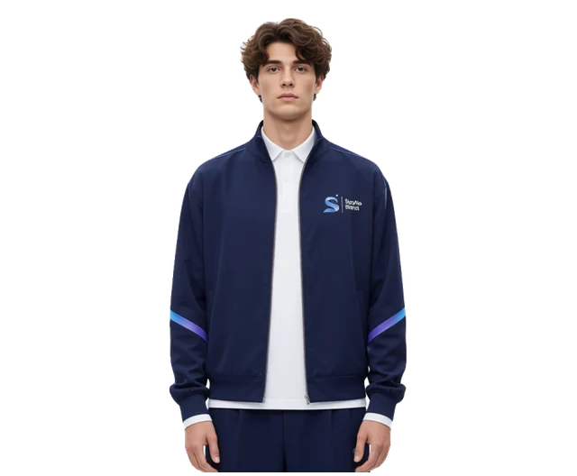
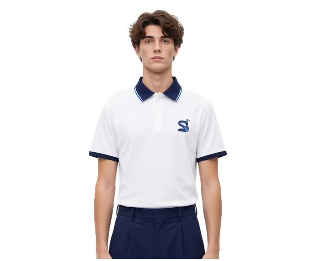
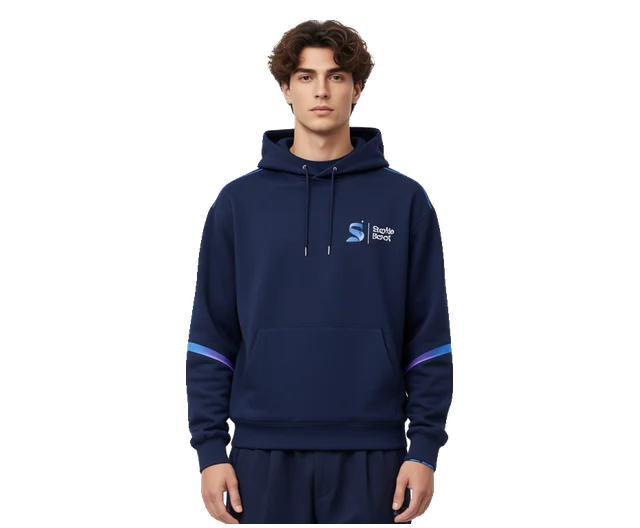
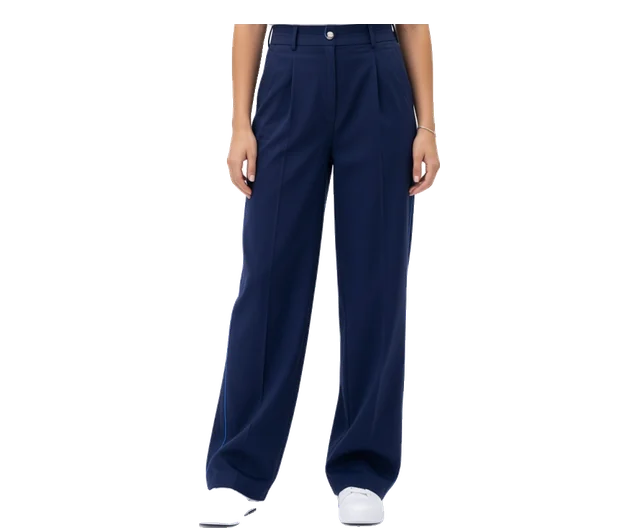
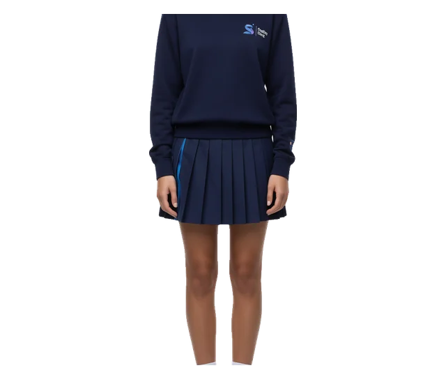
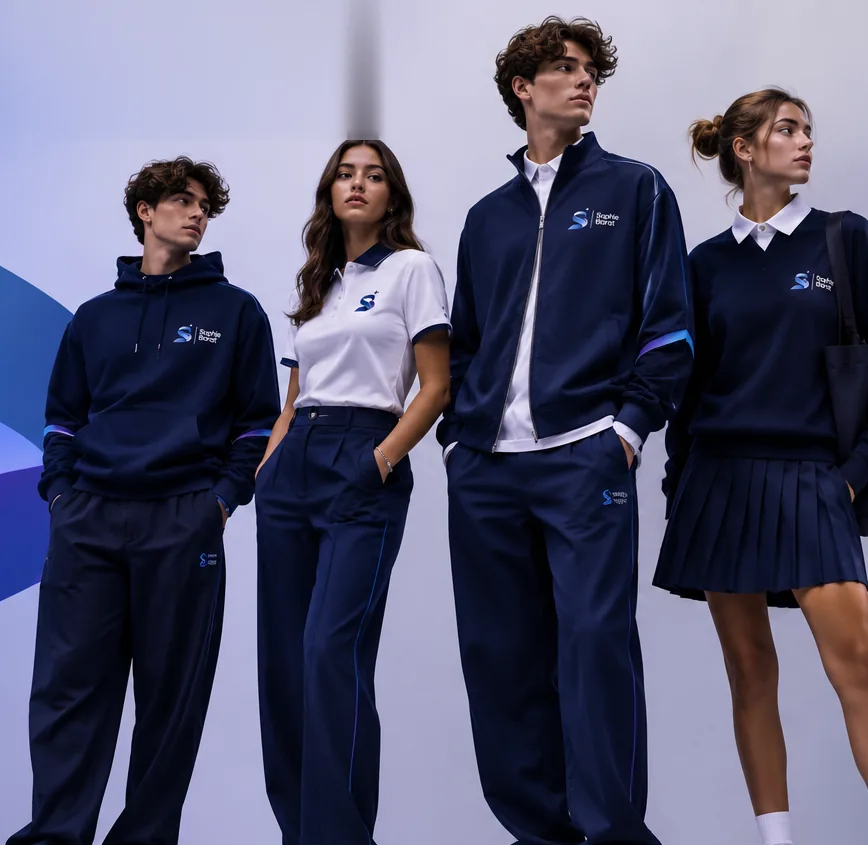

Student project — not the official website of Groupe scolaire Sophie Barat
Our slogan
#061638
#087DFF
#672DFF





The configurator

Good for your back. Good for the planet.
Our school is a boarding school
A big shopping centre inside the school
Fashion · Beauty · Sneakers · Jeans
Restaurants of every kind
Street food · Brasseries
A tablet in every room
Turn your room into any room: rest room, gym…
Moving walkways to take us to our classrooms